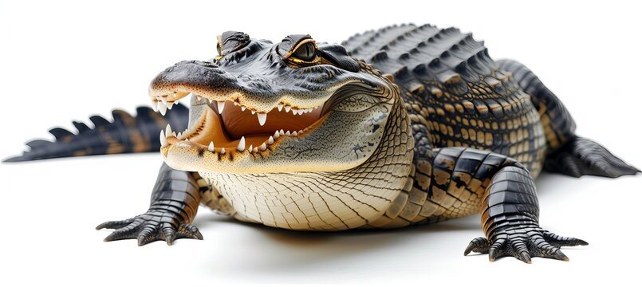

Аллига́торы (лат. Alligator, исп. el lagarto — ящерица[1]) — род, включающий всего два современных вида: американский, или миссисипский аллигатор (Alligator mississippiensis) и китайский аллигатор (Alligator sinensis). Описание От других представителей отряда крокодилов аллигаторы отличаются более широкой мордой; глаза у них расположены более дорсально (в верхней части головы). Окраска обоих известных видов тёмная (часто почти чёрная), но зависит от цвета окружающей воды. Так, при наличии водорослей она может быть более зелёной, при высоком содержании в воде дубильной кислоты от нависающих деревьев окраска становится более тёмной. По сравнению с настоящими крокодилами (особенно представителями рода Crocodylus) у аллигаторов при закрытой челюсти видны только верхние зубы; правда, у некоторых особей зубы деформированы настолько, что это создаёт трудности при идентификации. У крупных аллигаторов глаза отсвечивают красным цветом, у небольших — зелёным. По этому признаку аллигатора можно обнаружить в тёмное время суток. Самый крупный аллигатор, когда-либо зафиксированный в истории, был обнаружен на острове Марш (англ. Marsh Island) в американском штате Луизиана — его длина составила 5,8 м, а масса — около тонны[2]. Считается, что самые крупные миссисипские аллигаторы едва ли могут вырасти более чем до 4,5 метра. Китайский аллигатор значительно меньше, его длина редко превышает 2 м, хотя в прошлом поступали сообщения и о трехметровых особях.